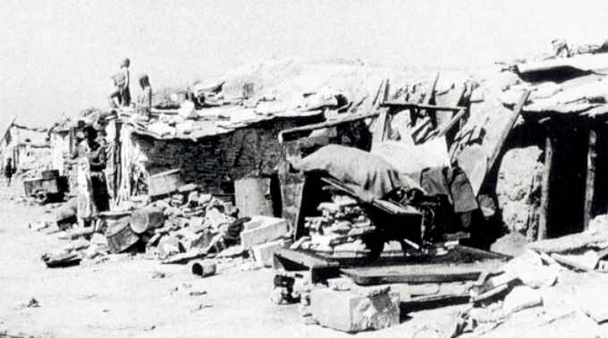
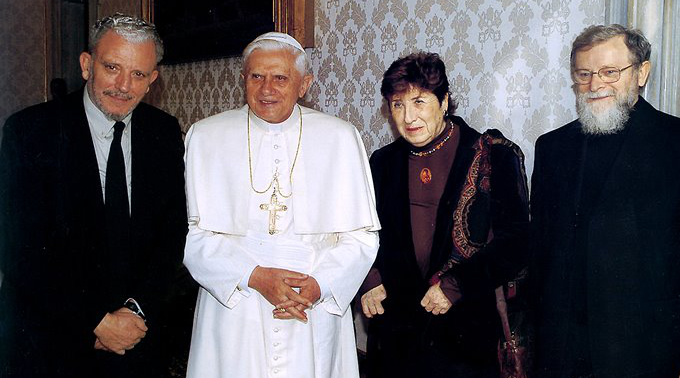
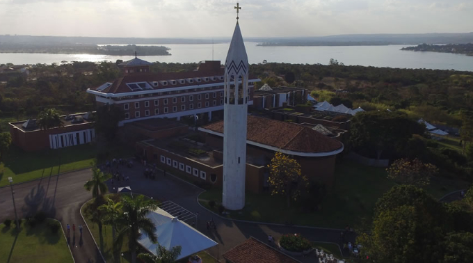

<section>
  <div class="content">
    <div class="row">
      <div class="col-md-6 offset-md-3 corpo-post">
        <p>
          
        </p>
        <p class="titulo">O Caminho Neocatecumenal começou nas favelas de Palomeras Altas, periferia de Madri, em 1964</p>
        <p>
          Com a aprovação definitiva dos Estatutos, em 2008, a Santa Sé reconheceu o Caminho Neocatecumenal como um itinerário de formação
          católica para adultos que está a serviço do Bispo como uma das modalidades de realização da iniciação cristã e
          da educação permanente na fé. Este Itinerário de redescobrimento do Batismo, similar ao que faziam os primeiros
          cristãos antes de serem batizados, se realiza nas paróquias, vivido em comunidades constituídas por pessoas de
          diversas idades e condição social que, gradualmente, vão sendo levados a intimidade com Jesus Cristo, se tornando
          sujeitos ativos na Igreja e testemunhas da Boa Nova do Salvador.
        </p>
        <p class="subtitulo">
          Início
        </p>
        <p>
          O jovem e famoso pintor espanhol Francisco José Gomez Arguello Wirtz nasceu em 1939, em León, Espanha. Apesar da carreira
          promissora, Kiko viveu um período de crise existencial em que questionava o sentido da vida. Após passar por uma
          experiência profunda de conversão, deixou tudo e apenas com um crucifixo, uma bíblia e um violão, foi viver na
          favela, entre os drogados, prostitutas, ambulantes, os mais pobres, para que no sofrimento deles pudesse encontrar
          e contemplar a Jesus Cristo, seguindo as pegadas do francês Beato Charles de Focauld (1858-1916). Neste ambiente,
          Kiko conheceu Carmen Hernández, espanhola nascida em Ólvega em 1930, filha de um importante empresário da época.
          Carmen se formou no Instituto Feminino As missionárias de Cristo Jesus e licenciou-se em Teologia com os Dominicanos
          de Valência, Espanha. Descobriu a renovação do Concílio Vaticano II através do liturgista Monsenhor Pedro Farnés
          Scherer. Depois de dois anos em Israel, em contato com a tradição viva do povo hebreu e os lugares de Terra Santa,
          foi para Madri com a esperança de formar um grupo de missionárias para evangelizar na Bolívia. Porém, em Madri,
          encontrou-se com Kiko Argüello entre os pobres e passou a morar num barraco em Palomeras Altas. A pedido destes
          mesmos pobres com os quais viviam, Kiko e Carmen lhes anunciavam o Evangelho, e, aqueles, por sua vez, davam uma
          ressonância diante da Palavra proclamada, manifestando os primeiros reflexos do amor de Deus na vida de todos.
          Assim, nasceu a primeira comunidade fundamentada sobre o tripé “Palavra de Deus, Liturgia e Comunidade”, que é
          base de todo o Caminho Neocatecumenal. 
        </p>
              
          <p>
          Com o passar do tempo e do apoio do, então, arcebispo de Madri, Dom Casimiro
          Morcillo, esta primeira comunidade neocatecumenal começou a celebrar em uma paróquia próxima, e, aos poucos, este
          itinerário de iniciação cristã se difundiu na arquidiocese de Madri e em outras dioceses espanholas. Em 1968, os
          iniciadores do Caminho Neocatecumenal chegaram a Roma e se estabeleceram na favela do Borghetto Latino. Com o consentimento
          do Cardeal Angelo Dell’Acqua, então Vigário Geral de Sua Santidade para a cidade de Roma, teve início a primeira
          catequização na Paróquia de Nossa Senhora do Santíssimo Sacramento e Santos Mártires Canadenses. A partir destas
          comunidades, o Caminho Neocatecumenal se difundiu em dioceses de todo o mundo. Em 1971, o presbítero italiano Mário
          Pezzi, missionário Comboniano, com a permissão de seus superiores, incorporou-se à equipe com Kiko e Carmen, formando
          assim, a Equipe Internacional Responsável pelo Caminho Neocatecumenal. Após a morte de Carmen em 19 de julho de
          2016, a missionária espanhola María Ascención Romero passou a integrar a Equipe Internacional.
        </p>
        <p class="subtitulo">
          Brasil
        </p>
        <p>
          A primeira comunidade neocatecumenal do Brasil se formou em 1974 na Catedral do Divino Espírito Santo, em Umuarama, PR. Rapidamente,
          bispos e presbíteros de outros estados passaram a pedir o Caminho Neocatecumenal, de forma que, após quase 50 anos,
          este Itinerário de Iniciação Cristã está presente em 100 dioceses, entre elas as Arquidioceses de São Paulo, Brasília,
          Rio de Janeiro, Belém do Pará, e demais dioceses das cinco regiões do Brasil, com 1.800 comunidades vivendo a fé
          em 500 paróquias.
        </p>
        <p>Vocações</p>
        <p>
          São inúmeros os frutos que nascem desta realidade eclesial, destinada inteiramente a Nova Evangelização. Ao longo destes
          50 anos, centenas de famílias, geralmente numerosas, com oito, dez filhos, que fazem este Itinerário de Iniciação
          Cristã, deixam suas casas, cidades, trabalhos e se oferecem para ajudar na missão evangelizadora da Igreja, partindo
          para qualquer parte do mundo, sendo um testemunho vivo da Família Cristã nas regiões descristianizadas, preparando
          o surgimento de novas paróquias missionárias. Muitas vocações à vida monástica ou a vida como celibatárias missionárias
          também tem sido suscitada entre as moças, assim como centenas de rapazes que se levantam para a missão ou para
          o seminário.
        </p>
        <p class="subtitulo">
          Seminários Arquidiocesanos Redemptoris Mater
        </p>
        <p>
          Um dos frutos desta Iniciação Cristã são os Seminários Missionários Redemptoris Mater para a formação de sacerdotes missionários.
          Após amadurecer a vocação em uma comunidade, os jovens se colocam à disposição da Igreja para partir em missão
          para qualquer parte do mundo como presbíteros.
        </p>
        <p>
            
        </p>
        <p>
          O primeiro Seminário Missionário Internacional Redemptoris Mater abriu-se em Roma, em 1987. Atualmente, existem no mundo
          120 Seminários Redemptoris Mater, onde estão sendo formadas mais de 2.000 seminaristas. Quatros destes seminários
          estão no Brasil nas Arquidioceses de São Paulo, Brasília, Belém do Pará e Rio de Janeiro.
        </p>
      </div>
    </div>
  </div>
</section>